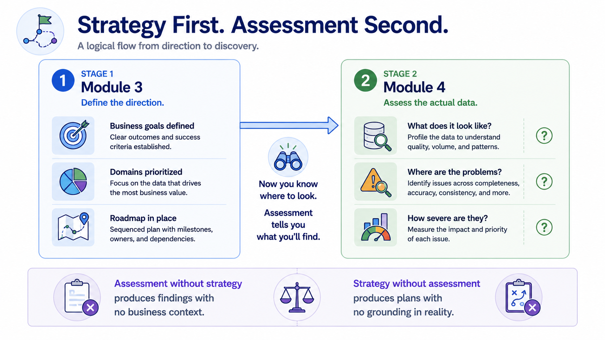
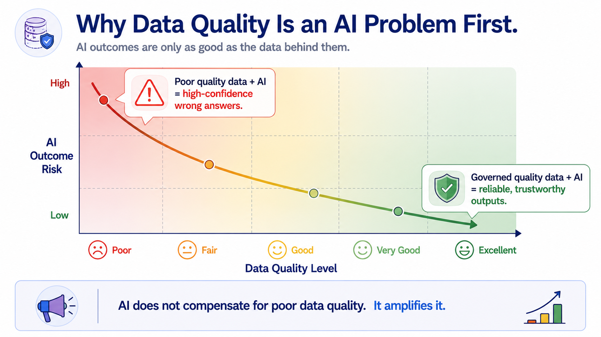
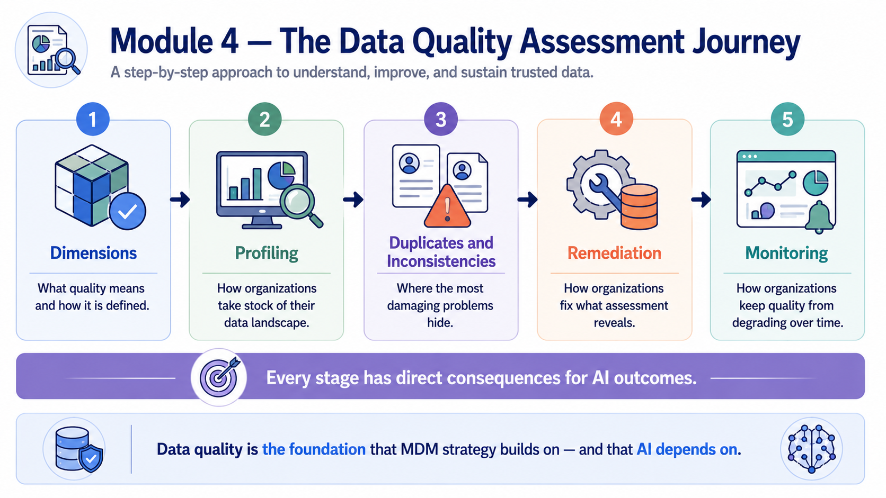

Data Quality Assessment
Module support notes
Why Data Quality Assessment Comes After Strategy
Data quality assessment is most valuable when it is anchored to the strategic work that precedes it. Organizations that assess data quality without first defining business goals tend to produce comprehensive reports that nobody acts on — because the findings have no connection to what the business is trying to achieve.
When assessment follows strategy, every finding can be evaluated against a specific business priority, and remediation effort can be directed toward the problems that matter most rather than the problems that are easiest to fix.
Note
Module 3 defined your business goals, prioritized your domains, and built your roadmap. Module 4 picks up from there: now that you know where to look, assessment tells you what you'll find. Assessment without strategy produces findings with no business context. Strategy without assessment produces plans with no grounding in reality.

The AI Stakes in Module 4
The AI dimension of data quality is not a future concern — it is a present one for any organization that has already begun AI development or deployment. Every concept covered in this module has a direct AI implication.
Duplicate records corrupt training datasets. Inconsistencies in entity definitions confuse models that depend on stable reference points. Incomplete data creates blind spots in predictions. And without ongoing quality monitoring, data drift degrades model performance over time in ways that are difficult to detect and even harder to explain.
- Duplicates corrupt AI training datasets before the model ever runs
- Inconsistent entity definitions undermine the stable reference points models depend on
- Incomplete data produces predictions with systematic blind spots
- Unmonitored quality degradation causes silent model drift over time
Warning
AI does not compensate for poor data quality — it amplifies it. Poor quality data fed into an AI system produces high-confidence wrong answers. The model's confidence makes the problem harder to spot, not easier. Governed, quality data is the prerequisite for AI outputs that can be trusted and acted on.

This module covers the full data quality assessment journey — five stages that build on each other and each carry direct consequences for AI outcomes.
